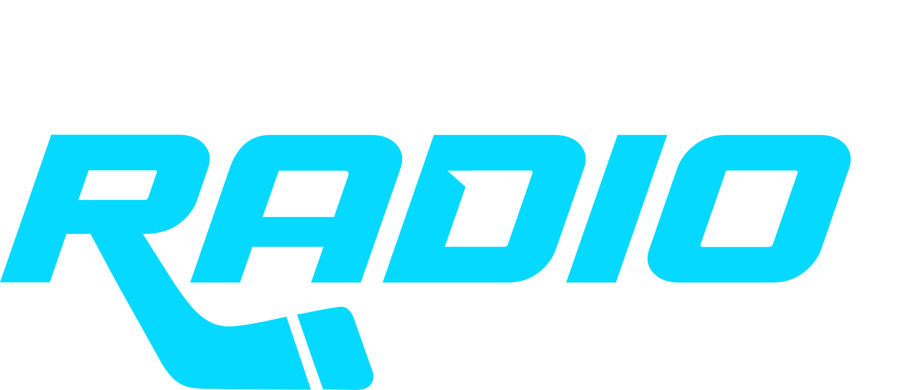

DER SENDER
EISHOCKEY IM OHR.
HockeyRadio bringt Eishockey und Musik zusammen. Für den Weg zur Halle, die Zeit im Büro und deinen Feierabend.
POWERED BY SPRADETV & BLUEline
Eis im Herzen. Musik im Blut. Dein Sound zwischen
Bully und Schlusssirene – immer einen Puck näher dran.
DEIN TAG MIT HOCKEYRADIO
Musik, Eishockey-News und eure Shows. Entdecke das Programm für jeden Wochentag.
MEHR ALS DIE DRITTELPAUSE

DER SENDER
HockeyRadio bringt Eishockey und Musik zusammen. Für den Weg zur Halle, die Zeit im Büro und deinen Feierabend.
DIE MUSIK
Vom ersten Bully bis Overtime: Hockey & Hits begleitet deinen Tag, Gameday Warmup bringt die Stadionhits und am Abend läuft dein Soundtrack nach der Schlusssirene.
DIE COMMUNITY
Ein Gruß an die Fankurve oder eine Botschaft an dein Team? Sende deinen persönlichen Radiogruß direkt an HockeyRadio.
EIN KLICK. MITTENDRIN.
Auf dem Smartphone, Tablet oder Computer:
HockeyRadio ist da, wo du bist.
Tippe auf „Jetzt hören“. Der Player am unteren Bildschirmrand spielt unseren RadioKing-Livestream ab. Du benötigst eine Internetverbindung. Es ist keine Anmeldung nötig.
Der Stream ist kostenlos erreichbar. Bei mobiler Nutzung können Kosten deines Internetanbieters entstehen. Der Datenverbrauch hängt von der Streamqualität und deiner Hördauer ab.
Unter „Programm“ findest du die Sendungen für jeden Wochentag: von der Frühschicht über Hockey & Hits bis Overtime. Dazu kommen Powerplay der Stunde, die Blueline Eishockeyshow, Gameday Warmup und Die Konferenz. Unter „Infos“ stehen unsere kurzen Rubriken. „Jetzt live“ kennzeichnet die aktuelle Sendung laut Sendeplan.
Prüfe deine Internetverbindung und starte den Player erneut. Manche Browser blockieren Audio, bis du auf Play tippst. Alternativ kannst du den direkten RadioKing-Stream öffnen ↗.
PARTNER WERDEN. MITTEN IM EISHOCKEY.
Sie wollen Partner werden und tausende Eishockeyfans erreichen?
Dann bringen Sie Ihre Marke dorthin, wo Eishockey gelebt wird: ins Ohr der Fans. HockeyRadio verbindet News, Spieltagsstimmung und Musik mit der Leidenschaft für den Sport – auf dem Weg zur Halle, im Alltag und nach der Schlusssirene.
Werden Sie Teil unseres Teams. Gemeinsam machen wir Ihre Marke hörbar.
Ein klares Themenumfeld für Ihre Marke. Von den News bis zur Konferenz dreht sich bei uns alles um den Sport, den unsere Hörer lieben.
Sprechen Sie Menschen an, die mit ihrem Verein mitfiebern – Fans, Spieler und alle, die Eishockey auch abseits der Halle begleitet.
Ob klassischer Audiospot, Präsentation einer Rubrik oder Sendungssponsoring: Wir finden den passenden Auftritt für Ihre Botschaft.
Vom einzelnen Format bis zur langfristigen Zusammenarbeit: Gemeinsam entwickeln wir ein Angebot passend zu Ihren Zielen und Ihrem Budget.
Audiospots / Rubrikensponsoring / Sendungspatenschaften / Präsenz auf unserer Website
Ihre Anfrage richten Sie gern an j.manger@sprade.tv.